Paw Match App
Case Study
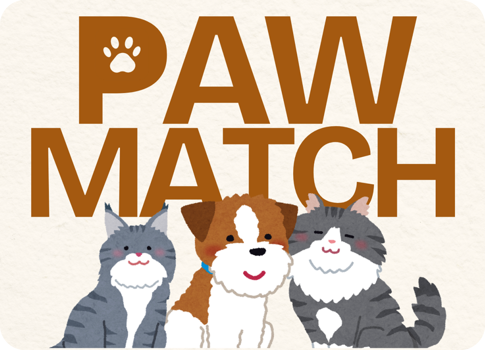
✨ Overview
ROLE
UX/UI Designer
PLATFORM
Mobile app [iOS / Android]
Timeline
2025
TOOLS
Figma
DELIVERABLES
Problem Statement, High-Fidelity UI Screens , System Architecture Diagram, SWOT Analysis, Business Model Canvas, App Icon
OVERVIEW
Many pet owners want safe, social experiences for their pets, but finding a trusted playmate, tracking health records, and managing schedules means juggling scattered tools. I designed Paw Match, a mobile app that brings matching, health management, and community together. Owners can swipe to find playmates or breeding partners, store medical records and reminders, discover nearby pet services on a map, and chat with other owners, all in one trusted platform.
✨ Highlights
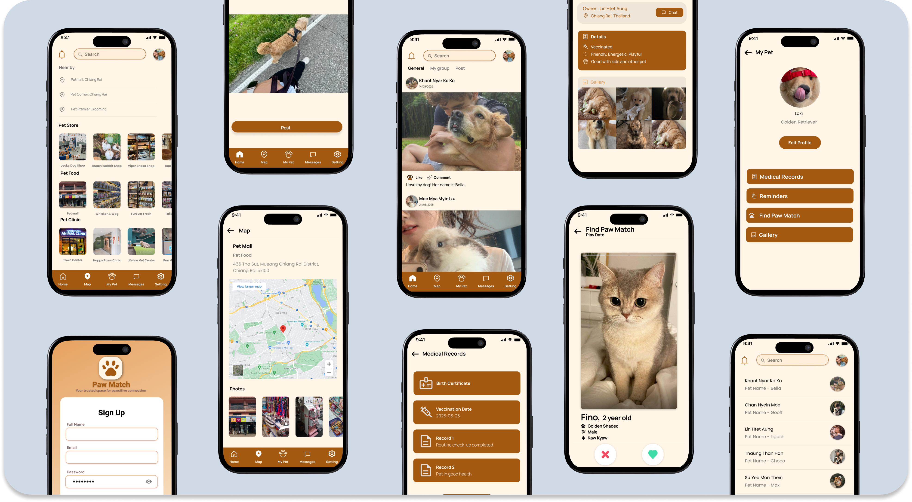
✨ The Challenge
Problem Framing
Pet owners want safe, social experiences for their pets, but the tools they have are scattered and hard to trust.
Pinpointing Issues
No Safe Way to Find Playmates: Owners lack a trusted way to find compatible companions for their pets.
Scattered Records: Health records and schedules are spread across places, making them inconvenient and inefficient to manage.
Weak Verification: There’s no reliable way to verify who is behind a profile, which causes safety and trust issues.
✨ The Solution
Our Goals
Paw Match is a pet app that brings matching, health management, and community together in one place.
Paw Match creates a friendly space where pet owners can:
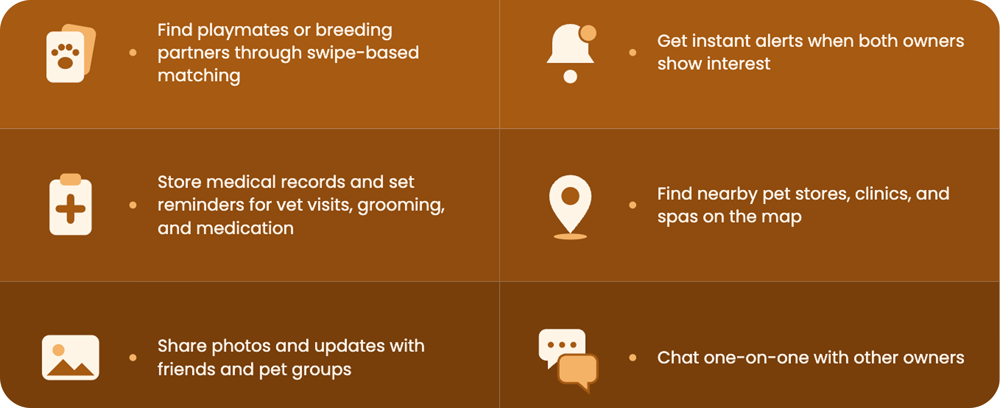
All wrapped in a warm, friendly interface that is easy to use.
High Level Goals
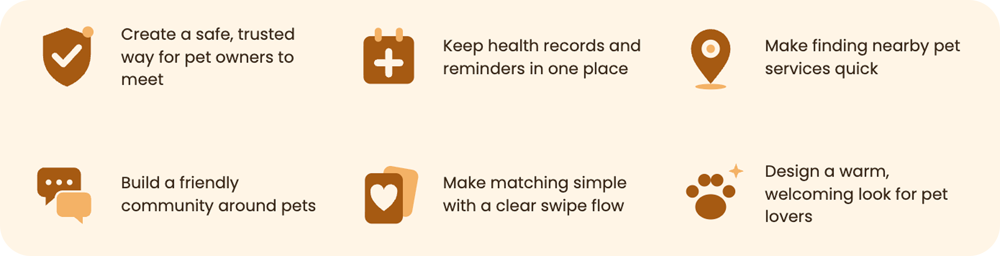
Target Audience
Paw Match is designed for pet owners who want safe, social experiences for their pets. It serves:
- Pet owners looking for playdates and socialization for their pets
- Breeders looking for verified, safe breeding matches
- New pet owners who want support with adoption and vet care
Veterinary clinics and pet service providers are a secondary audience, since the Map helps owners find them.
✨Research Summary
Market Insights & Business Analysis
I analyzed Paw Match from both a product and a business point of view, using a SWOT analysis and a Business Model Canvas to understand where the app could succeed and what could hold it back.
![SWOT analysis. Strengths: AI-based matching, easy interface, strong emotional appeal, partnership potential, trusted community features. Weaknesses: low initial funding, small early user base, reliance on shelters, verification workload, ongoing tech upkeep. Opportunities: rising pet-adoption interest, global expansion, viral social media potential, AI improvements, brand sponsorships. Threats: competitors, market saturation, data and privacy risks, regulatory limits, low retention after adoption.](../Photos/pawmatch/pawmatch_swot.png)
Business Model Canvas
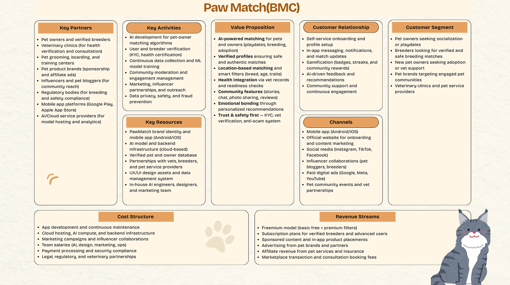
The canvas defined who Paw Match serves and how it could sustain itself:
- Customers: Pet owners looking for playdates, breeders looking for safe and verified matches, new pet owners who need adoption and vet support, and pet service providers
- Value: AI-powered matching, verified profiles, location-based filters, health records connected to vet information, and community features such as stories, chat, and photo sharing
- Revenue: A freemium model with premium filters, subscriptions for verified breeders, sponsored content, advertising from pet services, and affiliate partnerships
- Channels: A mobile app for Android and iOS, a website, social media, influencer partnerships, and pet community and vet events
✨System Architecture Diagram
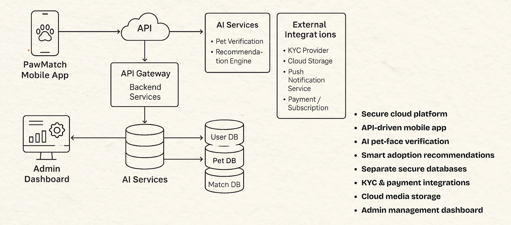
✨Ideation
The ideation process began with defining Paw Match’s core features and target users. I focused on balancing the app’s different sides: finding playmates, caring for a pet, and building a community. Key considerations included:
How to help owners find compatible playmates or breeding partners in a way that feels simple and safe
How to keep a pet’s health records and reminders in one place, so they’re easy to find and update
How to help owners find nearby pet shops, clinics, and spas quickly, based on where they are
How to build a friendly community through posts, groups, and one-on-one chat without overwhelming the user
How to make swiping and match alerts clear, so owners know when both sides are interested
✨Key Features
Home Page
The Home section is your social feed for pet owners, with
thoughtfully designed features:
🌱 General Feed with posts from owners you’re connected with
🌱 My Group Feed for communities you joined, like Dog Lovers or
Cat Lovers
🌱 Create a Post to share pet photos, updates
🌱 Likes and comments to interact with other owners
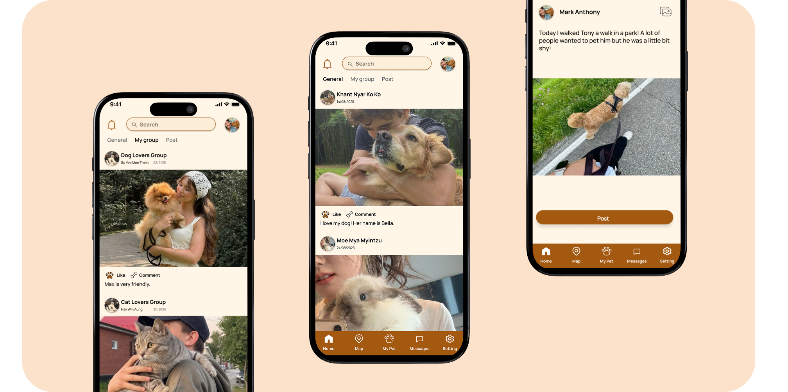
Map
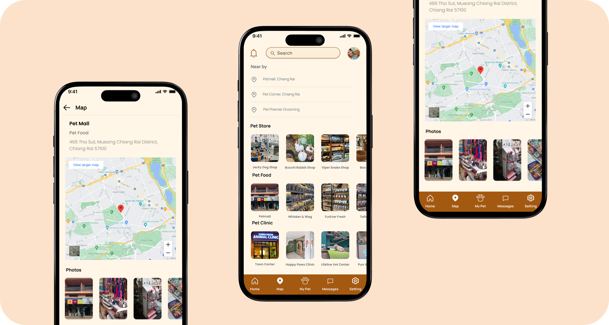
The Map section helps owners find pet services nearby, with
thoughtfully designed features:
🌱 Search by category: pet store, pet food, pet clinic, or pet spa
🌱 Keyword search, such as “pet clinic near me”
🌱 Suggested nearby locations based on your position
🌱 Shop detail view with a map and photos to check cleanliness
and size
My Pet
The My Pet section keeps everything about your pets in one place,
with thoughtfully designed features:
🌱 Pet list with each pet’s name, type, and profile photo, plus an Add
Pet button
🌱 Medical Records for vaccinations, checkups, medications, and
health notes
🌱 Reminders for vet visits, grooming, medication, and feeding
🌱 Gallery to save and organize your pet’s photos
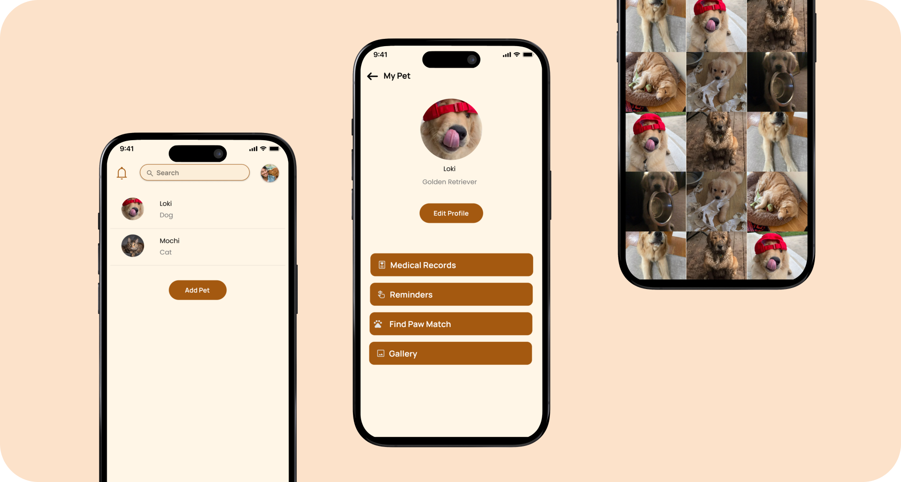
Find Paw Match
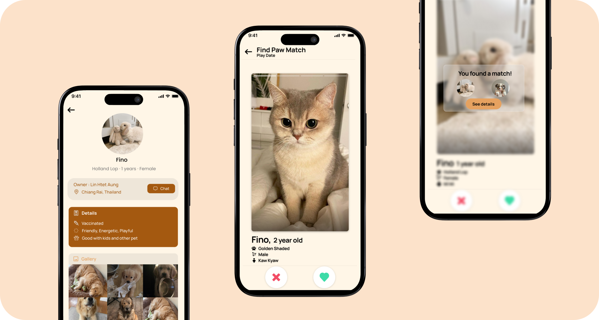
The Find Paw Match section is the heart of the app, helping owners
connect their pets, with thoughtfully designed features:
🌱 Start matching right from your pet’s profile
🌱 Choose your purpose: Play Date or Paws Breeding
🌱 Swipe through pet profiles with photos, age, breed, and
personality traits
🌱 Instant match alerts when both owners show interest
Messages
The Messages section keeps conversations with other owners easy
to find, with thoughtfully designed features:
🌱 Chats with owners you’ve added as friends
🌱 One-on-one messages to share care tips, ask about pets, or
arrange meetups
🌱 Each chat shows the owner’s name with their pet’s name for easy
recognition
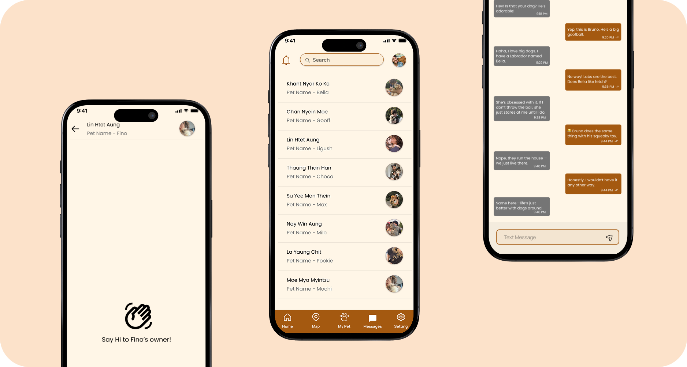
✨ Reflections
Key Takeaways
Trust is essential: An app that connects pet owners with each other has to feel safe, which shaped how matching, profiles, and messaging had to work.
Two purposes, one flow: Letting owners choose between a playdate and breeding at the start keeps the swipe experience clear for each goal.
One home for pet life: Bringing matching, health records, reminders, a map, and community together reduces the number of scattered tools owners juggle.
Business analysis shaped the design: The SWOT and Business Model Canvas showed where trust, verification, and community needed the most attention.
Simple navigation: Five tabs (Home, Map, My Pet, Messages, Setting) kept a feature-rich app easy to move through.
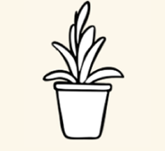
Warmth matters: A cream and brown palette and friendly details made the app feel welcoming to pet lovers.
Next Steps
My immediate next steps include:
🐾 Running usability tests on the prototype with a small group of pet owners
🐾 Refining the experience based on their feedback
🐾 Designing the verification flow in detail
🐾 Exploring the premium features from the business model, such as advanced match filters
🐾 Building a roadmap for future features based on user feedback
Looking further ahead, I’d like to grow the community features and explore more ways for owners to build trust and find the right match for their pets.
Thank you for checking out this project! 🐾